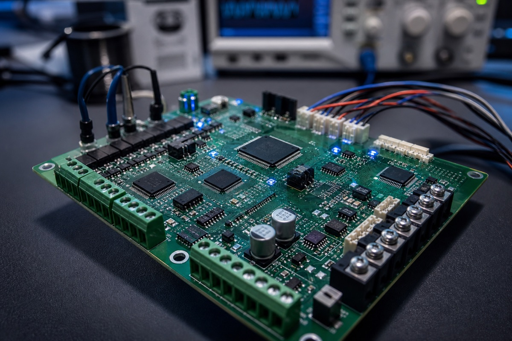
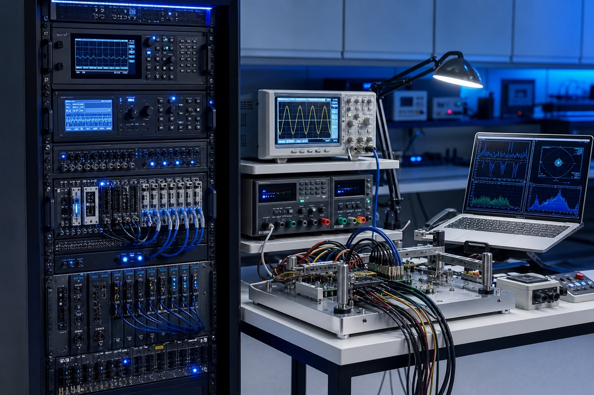
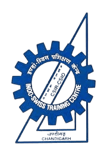
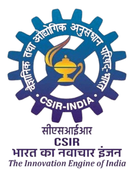

Concept-to-production ownership across hardware-software products.
I lead complex hardware-software programs to production.
Technical Program Manager · Test Systems Architect
Technical Program Manager and Test Systems Architect with 7 years delivering complex hardware-software products across EV charging, lithium-ion battery/BMS, and telecom power.
- 01RequirementsScope, risks, acceptance
- 02ValidationArchitecture, limits, evidence
- 03ReleaseReadiness, decisions, handover
- 04ProductionRollout, telemetry, learning
Impact that connects program scope to engineering depth.
Operating outcomes across NPI execution, HIL/ATE automation, connected-product analytics, reliability loops, firmware cadence, and field recovery.
Automated validation platforms spanning architecture, commissioning, and handover.
Production IoT analytics across globally deployed charger and battery units.
Automation and repeatable evidence loops replacing manual validation burden.
Reliability feedback translated into preventive and corrective action.
Diagnostic workflows and service intelligence reducing recovery time.
Automation, standard validation benchmarks, and release evidence compressing NPI cycles.
A program leader who can stay technical when the work gets messy.
Bridges requirements, validation strategy, test systems architecture, control software, commissioning, release evidence, production rollout, and field feedback without losing engineering detail.
Program architecture
Frames PRDs, roadmaps, milestones, risks, dependencies, acceptance criteria, release gates, and stakeholder alignment before execution pressure compounds.
Validation systems
Defines test strategy, HIL/ATE architecture, hardware interfaces, instrumentation, test cases, limits, commissioning, and production handover.
Automation and analytics
Uses Python, SQL, Pandas, Scikit-learn, Flask, APIs, Power BI, and telemetry to turn operating signals into reliability decisions.
Cross-functional delivery
Coordinates R&D, firmware, quality, manufacturing, service, suppliers, international customers, and leadership around measurable outcomes.
Product domains where program execution meets hardware reality.
Technical imagery keeps the product context concrete while keeping employer-specific systems, customer details, and private architecture out of view.
Battery packs
Battery behavior analysis, charge-discharge validation, field-failure investigation, SOC/SOH profiling, and reliability feedback loops.

BMS electronics
BMS diagnostics, CAN/UART telemetry, cell voltage and temperature visibility, fault flags, and automated evidence capture.
EV chargers
EVSE validation, connected telemetry, preventive maintenance signals, service triage, firmware cycles, and product operations analytics.

Testing stations
Python-automated HIL/ATE systems, fixtures, PLC interfaces, pass/fail logic, parametric limits, and production deployment.
Selected technical programs at hiring-manager depth.
Each summary focuses on ownership, technical scope, operating complexity, and measurable outcomes while keeping customer names, internal product names, thresholds, and architecture private.
Validation platform
10+ systems
Automated Multi-Product HIL / ATE Platform
Designed modular hardware and software architecture for BMS, EVSE, and SMR/rectifier validation with sequenced tests, firmware operations, data logging, automated pass/fail decisions, and traceable release evidence.
- Ownership
- Requirements, validation plans, test cases, parametric limits, hardware interfaces, control software, integration, commissioning, and production deployment.
- Outcome
- Standardized validation benchmarks across product lines, reducing validation effort by 80% and shortening firmware cycles by 70%.
Connected reliability
12K+ units
IoT Predictive Maintenance and Product Analytics
Architected a production IoT telematics analytics platform that turned charger and battery field data into anomaly detection, statistical fault models, service alerts, KPI dashboards, and product-design feedback.
- Ownership
- Telemetry ingestion, fault modeling, service workflows, daily triage signals, dashboards, and engineering feedback loops.
- Outcome
- Surfaced 5-10 high-severity issues daily before customer escalation and helped reduce MTTR by more than 40%.
Diagnostic tooling
>60% faster diagnosis
BMS Diagnostic GUI and Real-Time Data Logger
Created live diagnostic visualization for cell voltages, temperatures, SOC, SOH, fault flags, and charge-discharge curves over CAN/UART, with automated CSV logging and Pandas post-processing.
- Ownership
- Diagnostic workflow design, real-time acquisition, visualization, structured logging, post-processing, and field-failure interpretation.
- Outcome
- Reduced field failure diagnosis time by more than 60% and improved consistency of BMS fault assessment.
Engineering applications
Full-stack delivery
Full-Stack Workflow Application
Built a multi-role workflow application with authentication, REST APIs, relational models, asynchronous task queues, and automated notifications to demonstrate end-to-end software delivery beyond internal engineering tools.
- Ownership
- Requirements, data modeling, role-based flows, API design, async processing, notification logic, release coordination, and adoption support.
- Outcome
- Created governed workflow paths, clearer status review, and stronger operational follow-through for multi-role users.
Experience progression at Exicom Tele-Systems.
Progressive NPI and product-operations ownership in Gurugram, India, across EV charging, energy storage, and telecom power solutions.
-
Deputy Manager - NPI, Projects and Product Operations
Owns 10+ Python-automated HIL/ATE systems for BMS, EVSE, and SMR/rectifier platforms, plus validation strategy, release evidence, NPI program leadership, predictive maintenance analytics, and customer/supplier technical interface.
-
Assistant Manager - NPI
Engineered Python-based data analysis, firmware flashing, and process automation tools that removed engineer-dependent steps from 80% of validation, shortened firmware cycles by 70%, and improved time-to-market by 30%.
-
Senior Engineer - NPI
Developed BMS diagnostic and validation tools, battery-pack behavior analysis, SOC/SOH profiling over CAN/UART, full-stack engineering dashboards, and reusable NPI standards across product lines.
-
Junior Engineer / Engineer - NPI Mobility
Built battery diagnostic, telemetry logging, behavioral analysis, and firmware-flashing tools while designing test jigs, communication interfaces, and validation fixtures using CAN, UART, and RS485.
-
NPI Engineering Trainee
Built Python scripts for Li-ion pack data logging and field-failure analysis, supported battery charge-discharge test setup commissioning, and contributed engineering checklists adopted as team templates.
Capabilities grouped by the work they support.
Tools support the delivery system: program control, validation architecture, embedded interfaces, data products, and reliability loops.
Program and product
PRDs, roadmaps, program planning, stakeholder/customer/supplier management, risk and dependency management, KPI/OKR, Agile/Scrum, and go-to-market coordination.
Test and systems
HIL/ATE architecture, test strategy, test-case design, acceptance limits, firmware validation, system integration, regression/lifecycle testing, FMEA, and functional safety.
Embedded and hardware
BMS, EVSE/OCPP, SMR/rectifiers, CAN, UART, RS485, Modbus, BLE, I2C, PLCs, relays, embedded systems, firmware flashing, oscilloscopes, and logic analyzers.
Software and data
Python, SQL, C, Java, Bash, Pandas, NumPy, Scikit-learn, Matplotlib, Flask, Vue.js, PyQt5/PySide2, REST APIs, SQLAlchemy, Redis, Celery, Power BI, Git, and JIRA.
Analytics and operations
Predictive analytics, anomaly detection, RCA, self-service dashboards, product intelligence, release evidence, program KPIs, and service-facing reliability workflows.
NPI documentation
Test protocols, FMEA records, engineering checklists, validation matrices, evidence requirements, acceptance criteria, and reusable release documentation frameworks.
Education and publication.
Formal data-science, electronics, mechatronics, industrial automation, and robotics foundations behind the program and validation work.

Indian Institute of Technology Madras
2021 - 2025 Bachelor of Science in Data Science and Applications, with relevant study in machine learning, statistical inference, business analytics, databases, data visualization, deep learning, and Python.


INDO-SWISS Training Centre, CSIR-CSIO
2016 - 2019 Engineering Diploma in Electronics; Mechatronics and Industrial Automation, with study in embedded systems, microcontrollers, industrial PLCs, sensors, PCB design, electronics, and control systems.
Robotics and IoT publication
Co-author of "Experiments on Design of Obstacle Avoiding Robots Based on Sensors, Bluetooth, and IoT", Chapter 6 in IGI Global's 2020 handbook on IoT applications in robotics and automation.
Ready for senior technical program conversations.
For roles across hardware-software programs, NPI, validation systems, connected products, engineering applications, and reliability.
- Location
- Gurugram, India
- sahilsandhu397@gmail.com
- Phone
- +91-70871-93840
- linkedin.com/in/sahil-sandhu
- Resume
- Download full resume